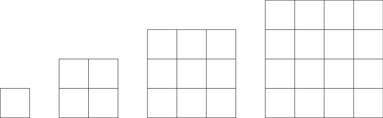

2 Background
2.1 Sets
A set is a collection of elements.
We reserve uppercase letters as labels for sets and lowercase letters as labels for their elements. We write \(a \in A\) to indicate that \(a\) is an element of \(A\).
We may specify a set by enumeration, e.g., \(\{0, 2, 4\}\) is a set of three natural numbers. Alternatively, we may specify a condition satisfied by all, and only its elements, e.g., {\(x\): \(x\) is an even natural number less than 5}.
Definition 2.1 A set \(A\) is a subset of another set \(B\), written \(A \subseteq B\), if every element of \(A\) is an element of \(B\). A set \(A\) is a proper subset of \(B\) if \(A\) is a subset of \(B\) but \(B\) is not a subset of \(A\).
Proposition 2.1 (Extensionality) If \(A\) is a subset of \(B\) and \(B\) is a subset of \(A\), then \(A\) is the same set as \(B\). That is, \(A = B\).
{6} = {\(x\): \(x\) is a perfect number less than 10}.
A perfect number is the sum of its proper divisors, e.g, 6 is perfect because it is a sum of 1, 2, and 3.
On the one hand, {6) \(\subseteq\) {\(x\): \(x\) is a perfect number less than 10}, since 6 is a perfect number less than 10.
On the other hand, {\(x\): \(x\) is a perfect number less than 10} \(\subseteq\) {6}, since nothing else is a perfect number less than 10.
By Extensionality, {6} = {\(x\): \(x\) is a perfect number less than 10}.
One may think that no mater what objects may be, there is a collection of them. Or, otherwise put, for each condition \(\dots x \dots\), there is a collection of all and only those objects satisfying the condition \(\dots x \dots\). That is, there is a set of the form \(\{x: \dots x \dots\}\). But that would be a mistake.
Consider the condition \(x \notin x\). There is no set of the form \(\{x : x \notin x\}\). For suppose such a set exists, which we may call \(R\).
if \(R \in R\), then \(R\) does not satisfy the condition \(x \notin x\) and \(R\notin R\).
if \(R\notin R\), then \(R\) satisfies the condition \(x \notin x\) and \(R \in R\).
We conclude that \(R \in R\) if, and only if, \(R \notin R\), which leads to contradiction.
In response to Russell’s paradox, we limit ourselves to collections we may construct from antecedently given collections in accordance to the axioms of modern set theory.
Proposition 2.2 (Separation) If \(A\) is a set and \(\dots x \dots\) is a condition on elements of \(A\), then there is a set \(B\) of exactly those elements of \(A\) which satisfy the condition \(\dots x \dots\). That is, \(B = \{x \in A: \dots x \dots\}\)
The axiom of separation yields the existence of sets conditional on the existence of supersets. To secure the inconditional existence of a set, we require another axiom.
Proposition 2.3 (Empty Set) There is a set without members which we label \(\emptyset\). That is, \(\emptyset\) is the set \(\{x: x \neq x\}\).
Further axioms justify the existence of sets constructed in terms of other given sets. The Pair Set Axiom, for example, justifies the existence of a pair set of two given sets:
Proposition 2.4 (Pair Set) Given two objects \(a\) and \(b\), there is a set whose elements are exactly \(a\) and \(b\). We write \(\{a, b\}\) for the pair set of \(a\) and \(b\).
2.2 Relations
We construe relations as sets of ordered pairs. But an ordered pair is itself a special set from which we can recover the order in which two components are given.
Definition 2.2 (Ordered Pair) The ordered pair of \(a\) and \(b\), \((a, b)\), is a doubleton set \(\{\{a\},\{a, b\}\}\). We will write that its first element is \(a\) and that its second element is \(b\).
Other definitions of ordered pair are feasible, but what matters is the ability to encode the order in which the two components are given.
Theorem 2.1 The ordered pair \((a, b)\) is the same as the ordered pair \((c, d)\) if, and only if, \(a\) is the same object as \(c\) and \(b\) is the same object as \(d\).
We first unfold the definition of \((a, b)\) as \(\{\{a\}, \{a, b\}\}\) and \((c, d)\) as \(\{\{c\},\{c, d\}\}\). We now argue that if \(\{\{a\},\{a, b\}\}\) is the same set as \(\{\{c\},\{c, d\}\}\), then \(a=c\) and \(b = d\).
We distinguish two cases:
If \(a=b\), then \(\{\{a\},\{a, b\}\}\) is \(\{\{a\},\{a,a\}\}\), which is just \(\{a\}\}\). So, if \(\{\{a\},\{a, b\}\}\) is the same set as \(\{\{c\},\{c, d\}\}\), then \(\{\{a\}\}\) is the same set as \(\{\{c\},\{c, d\}\}\), which means that \(c = d\) and \(a= c\) and \(b = d\).
If \(a\neq b\), then the singleton \(\{a\}\) and the doubleton \(\{a, b\}\) must correspond to \(\{c\}\) and \(\{c, d\}\), respectively, which requires that \(a=c\) and \(b=d\).
We can now identify a relation with a set of ordered pairs.
Definition 2.3 (Cartesian Product) The Cartesian Product \(A \times B\) of two sets \(A\) and \(B\) is the set of ordered pairs whose first element belongs to \(A\) and whose second element belongs to \(B\). That is, the Cartesian Product of two sets \(A\) and \(B\) is:\[ A \times B = \{(x, y): x\in A \wedge y\in B\}. \]
Definition 2.4 (Relation) If \(A\) is a set, \(R\) is a binary relation on \(A\) if, and only if, \(R\) is a subset of \(A \times A\).
\(R\) is a binary relation if, and only if, \(R\) is a binary relation on some set \(A\).
If \(R\) is a binary relation on \(A\), we sometimes write \(Rxy\) or \(xRy\) for \((x, y) \in R\).
2.2.1 Structural Features of Relations
We now specify some structural features a binary relation may exemplify.
Definition 2.5 (Reflexivity) If \(R\) is a binary relation on a set \(A\),
\(R\) is reflexive on \(A\) iff for every element \(x \in A\), \(Rxx\)
\(R\) is irreflexive on \(A\) iff for every element \(x \in A\), \(\neg Rxx\) for every element \(x\) in \(A\).
\(R\) is non-reflexive on \(A\) iff for some element \(x \in A\), \(\neg Rxx\).
Consider the set of English words \(W\). Then:
{\((u,v)\in W \times W\): \(u\) shares at least one letter with \(v\) is a reflexive relation on \(W\)}.
{\((u,v)\in W \times W\): \(u\) is an antonym of \(v\) is an irreflexive relation on \(W\)}.
{\((u,v)\in W \times W\): \(u\) is \(v\) backwards is a non-reflexive relation on \(W\)}.1
Definition 2.6 (Symmetry) If \(R\) is a binary relation on a set \(A\),
\(R\) is symmetric on \(A\) iff for all \(x, y \in A\), if \(Rxy\), then \(Ryx\).
\(R\) is asymmetric on \(A\) iff for all \(x,y \in A\), if \(Rxy\), then \(\neg Ryx\).
\(R\) is non-symmetric on \(A\) iff for some \(x, y \in A\), \(Rxy\) and \(\neg Ryx\).
\(R\) is antisymmetric on \(A\) iff for all \(x, y \in A\), if \(Rxy\), then \(Ryx\) only if \(x=y\)
Consider the set of English words \(W\). Then:
{\((u,v)\in W \times W\): \(u\) shares at least one letter with \(v\) is a symmetric relation on \(W\).
{\((u,v)\in W \times W\): \(u\) has fewer letters than \(v\) is an asymmetric relation on \(W\).
{\((u,v)\in W \times W\): \(u\) is no later than \(v\) in the lexicographical order is an anti-symmetric relation on \(W\).
Definition 2.7 (Transitivity) If \(R\) is a binary relation on a set \(A\),
\(R\) is transitive on \(A\) iff for all elements \(x,y,z \in A\), if \(Rxy\) and \(Ryz\), then \(Rxz\).
\(R\) is intransitive on \(A\) iff for all elements \(x,y,z \in A\), if \(Rxy\) and \(Ryz\), then \(\neg Rxz\).
\(R\) is non-transitive on \(A\) iff for some elements \(x,y,z \in A\), if \(Rxy\) and \(Ryz\), then \(\neg Rxz\).
Consider the set of English words \(W\). Then:
{\((u,v)\in W \times W\): \(u\) is no later than \(v\) in the lexicographical order is a transitive relation on \(W\).
{\((u,v)\in W \times W\): \(u\) is an antonym of \(v\) is an intransitive relation on \(W\).
{\((u,v)\in W \times W\): \(u\) is \(v\) backwards is a non-transitive relation on \(W\).2
Definition 2.8 (Equivalence Relation) A binary relation \(R\) on a set \(A\) is an equivalence relation on \(A\) if, and only if,
- \(R\) is reflexive on \(A\), and
- \(R\) is symmetric on \(A\), and
- \(R\) is transitive on \(A\).
Synonymy is an equivalence relation on the set of English words \(W\).
Synonymy is reflexive on \(W\). Every word is a synonym of itself.
Synonymy is symmetric on \(W\). If a word is a synonym of another word, then the latter word is a synonym of the former.
Synonymy is transitive on \(W\). If a word is a synonym of a second word and the second word is a synonym of a third, then the first word is a synonym of the third word.
Given an equivalence relation \(R\) on a set \(A\), we will write that two elements \(x, y \in A\) are \(R\)-equivalent when \(Rxy\). Equivalence relations induce a partition of the relevant set \(A\) into equivalence classes.
Definition 2.9 (Equivalence Class) If a relation \(R\) is an equivalence relation on a set \(A\), for each \(x\in A\), the equivalence class of \(x\), written \([x]_R\) is the set of elements of \(A\) that are \(R\)-equivalent to it: \[ [x]_R:=\{y\in A: Rxy\}. \] The quotient of \(A\) under \(R\) is the set of equivalence classes induced by \(A\): \[ A/R:= \{[x]_R: x \in A\}. \]
Given a set \(A\) of undergraduate students enrolled at USC, consider the following binary relation \(R\) on \(A\):
- \(R = \{(x,y)\in A\times A: x\) is in the same year as \(y\}\).
\(R\) is an equivalence relation on \(A\).
Given a student \(a\), the equivalence class \([a]_R\) is the set of students in the same year as \(a\). If \(a\) is a freshman, then \([a]_R\) will be the set of freshman students, if \(a\) is a sophomore, then \([a]_R\) will be the set of sophomore students, etc.
The quotient of \(A\) under \(R\), \(A/R\), consists of four sets: freshman, sophomore, junior, and senior students.
There is an alternative characterization of equivalence relations in terms of reflexivity and yet another structural feature of relations.
Definition 2.10 (Euclidean) If \(R\) is a binary relation on a set \(A\), then:
- \(R\) is euclidean on \(A\) iff for all elements \(x, y, z\in A\), if if \(Rxy\) and \(Rxz\), then \(Ryz\).
Here is the alternative characterization of an equivalence relation in question:
Theorem 2.2 If \(R\) is a binary relation on a set \(A\), then \(R\) is an equivalence relation on \(A\) if, and only if, \(R\) is reflexive on \(A\) and \(R\) is euclidean on \(A\).
If \(R\) is a binary relation on a set \(A\), then:
\(R\) is serial on \(A\) iff for every \(x\in A\), there is some \(y\in A\) such that \(Rxy\).
\(R\) is convergent on \(A\) iff for every \(x,y,z\in A\), if \(Rxy\) and \(Rxz\), then for some \(w\in A\), \(Ryw\) and \(Rzw\).
\(R\) is connected on \(A\) iff for every \(x, y \in A\), \(Rxy\) or \(x=y\) or \(Ryx\).
2.3 Induction and Definitions by Recursion
Induction is a powerful method for proving universal generalizations over some items ordered by the natural numbers, e.g., formulas and proofs by induction of length. Because natural numbers are defined inductively from \(0\) and the successor operation, they are similarly governed by a principle of induction:
Proposition 2.5 (Induction on the Natural Numbers) Given a condition \(\Phi\) on natural numbers, if
- \(\Phi(0)\), and
- for every natural number \(n\), \(\Phi(n)\) only if \(\Phi(n+1)\),
then for every natural number \(n\) \(\Phi(n)\).
Proposition 2.6 (Induction on the Positive Integers) Given a condition \(\Phi\) on positive integers, if
- \(\Phi(1)\), and
- for every positive integer \(n\), \(\Phi(n)\) only if \(\Phi(n+1)\),
then for every positive integer \(n\), \(\Phi(n)\).
Consider the pattern below:
\[ \begin{array}{lllll} 1 + 3& = & 4 & = & 2^2\\ 1 + 3 + 5 & = & 9 & = & 3^2\\ 1 + 3+ 5 +7 & = & 16 & = & 4^2\\ \cdots & = & \cdots & = & \cdots \\ \end{array} \]
You may now conjecture that the sum of \(n\) odd numbers beginning with \(1\) is \(n^2\).
One way to make the conjecture more vivid is through a geometrical argument, which involves reflection on the following succession of squares.

We now turn these considerations into a mathematical induction argument. Here is what we want to establish:
For each positive integer \(n\), \[ \sum_{k = 1}^{n}{2k - 1} = n^2. \]
Here \(2k-1\) is the \(k\)th odd number. So, the claim is that the sum of the first \(n\) odd numbers is \(n^2\).
Here the condition \(\Phi(n)\) is: \[ \sum_{k = 1}^{n} 2k - 1 = n^2 \]
By induction on the positive integers, it suffices to show:
\(\Phi(1)\) \[ \sum_{k = 1}^{1} 2k - 1 = 1^2 \]
\(\Phi(n)\) only if \(\Phi(n+1)\).
That is, suppose:
\[ \sum_{k=1}^{n} 2k-1 = n^2. \]
\[ \begin{array}{lll} \sum_{k=1}^{n+1} 2k-1 & = & (\sum_{k=1}^{n} 2k-1) + 2 (n+1) - 1\\ & = & n^2 + 2n +1\\ & = & (n+1)^2 \\ \end{array} \]
So, by induction on the positive integers, we conclude that every positive integer \(n\) satisfies the condition.
What is the sum of the first 100 positive integers?
\[ 1 + 2 + \dots + 99 + 100 \]
The answer is \(5050\). One way to arrive at it is by reflection on the following pattern: \[ \begin{array}{lllll} 1 & = & 1 & = & \frac{1.(1+1)}{2}\\ 1+2 & = & 3 & = & \frac{2 . (2+1)}{2}\\ 1 + 2+ 3 & = & 6 & = & \frac{3 . (3+1)}{2}\\ \cdots & = & \cdots & = & \cdots \\ \end{array} \]
If the pattern is completely general, then we may conjecture that the sum of the first \(100\) positive integers to be \(5050\), which is \(\frac{100.(100 +1)}{2}\).
We can use an induction on the positive integers to prove the generalization:
For every positive integer \(n\), \[ \sum_{k = 1}^{n} = \frac{n.(n+1)}{2}. \]
Here the condition \(\Phi(n)\) is: \[ \sum_{k = 1}^{n} = \frac{n.(n+1)}{2} \]
By induction on the positive integers, it suffices to show two claims:
\(\Phi(1)\), \[ \sum_{n = 1}^{1} = \frac{1.(1+1)}{2} \]
\(\Phi(n)\) only if \(\Phi(n+1)\).
That is, suppose:
\[ \sum_{k=1}^{n} = \frac{n.(n+1)}{2}. \]
Then:
\[ \begin{array}{lll} \sum_{k=1}^{n+1} & = & \sum_{k=1}^{n} + (n+1)\\ & = & \frac{n.(n+1)}{2} + (n+1)\\ & = & \frac{n^2 + 3n +2}{2} \\ & = &\frac{(n+1).((n+1)+1)}{2} \\ \end{array} \]So, we conclude that every positive integer \(n\) satisfies the condition.
A word of caution. The principle of induction becomes all too powerful when it is misused. Here is an example of how a misapplication of mathematical induction can lead us astray. Let me give you some examples.
Let \(\Phi(n)\) be the condition on positive integers:
- If \(A\) is a set of \(n\) students, then they all share a birthday.
By induction on the positive integers, it suffices to show two claims:
\(\Phi(1)\).
But of course, if \(A\) is a singleton, then there is just one birthday.
\(\Phi(n)\) only if \(\Phi(n+1)\).
For the sake of concreteness, let me pass from \(3\) to \(4\). Suppose \(A\) contains four students \(a, b, c, d\). On the assumption that \(\Phi(3)\), we know both that \(a, b, c\) share a birthday and that \(b, c, d\) share a birthday. So, \(a, b, c, d\) must share a birthday.
We may generalize the argument for other cases as well.
It would seem to follow that no matter what \(n\) may be, a set of \(n\) students must share a birthday. Therefore, all students must share a birthday.
The conclusion is false, but where exactly is the flaw in the argument?
Let \(\Phi(n)\) be the following condition on natural numbers:
- if two sets \(A\) and \(B\) have at most \(n\) elements, then \(|A|=|B|\).
That is, if \(A\) and \(B\) have at most \(n\) elements, then they are equinumerous, i.e., they can be put in one-to-one correspondence.
We proceed in two steps:
\(\Phi(0)\).
Suppose two sets \(A\) and \(B\) have at most \(0\) elements. Then. \(A =\emptyset =B\).
\(\Phi(n)\) only if \(\Phi(n+1)\).
Suppose \(\Phi(n)\) and let now \(A\) and \(B\) be two sets with at most \(n+1\) elements. Now, consider the sets \(A^-\) and \(B^-\), which arise from \(A\) and \(B\) by subtracting just one element \(a\) and \(b\) from each set. By inductive hypothesis, since \(A^-\) and \(B^-\) have at most \(n\) elements, they are equinumerous. But if they are, so will \(A^- \cup \{a\}\) and \(B^- \cup \{b\}\), which are none other than \(A\) and \(B\).
It would seem to follow that no two sets with \(n\) of fewer elements differ in cardinality, which would mean that no two finite sets differ in cardinality.
That gives us the absurd conclusion that all finite sets are equinumerous.
Where exactly is the flaw in the argument? The problem lies in the assumption that no matter what set we are given, we may, if we like, take away one element, which is not the case with the empty set.
We will sometimes rely on alternative but equivalent forms of induction:
Proposition 2.7 (Complete Induction) Given a condition \(\Phi(n)\) on natural numbers, if
- \(\Phi(0)\), and
- for all \(m \leq n\), \(\Phi(m)\) only if \(\Phi(n+1)\).
then for every natural number \(n\), \(\Phi(n)\).
Equivalently:
Proposition 2.8 (Complete Induction without a Base Case) Given a condition \(\Phi(n)\) on natural numbers, if
- for all \(m < n\), \(\Phi(n)\), then \(\Phi(n)\),
then for every natural number \(n\), \(\Phi(n)\).
Notice that \(\Phi(0)\) will be true if the conditional above holds, for it will be vacuously true that all natural numbers less than \(0\) satisfy the condition \(\Phi\).
We will often define infinite sets by recursion, which is closely connected to induction.
We define a set of factorial numbers by recursion on the natural numbers:
\[ \text{F} := 1 | (n+1).F(n) \]
Here is how to read that notation. We generate the factorial numbers by specifying
\[ F(0) = 1 \]
and by explaining how to move from \(F(n)\) to \(F(n+1)\):
\[ F(n+1) = (n+1). F(n) \]
The factorial number \(F(n)\) is commonly written as \(n!\). So, a number is a factorial number if it is \(F(0)\), namely, \(1\), or if it can be reached by repeated application of the rule that takes one from \(F(n)\) to \(F(n+1)\). That means that the set of factorial numbers include:
\[ 1 \ 2 \ 6 \ 24 \ \cdots \]
In other words, a number is factorial if and only if we may eventually reach that number by a finite number of application of the rules included in the definition.
You could define by recursion a set of formulas for a formal language. Suppose we start with a simple vocabulary, which consists of only three symbols:
\[ @, \#, \% \]
We could define a set of formulas for that language by means of the following recursion:
\[ \varphi ::= @ \ | \ \% \varphi \ | \ (\varphi \ \# \ \psi) \]
Here is how to read that notation now.
\(@\) is a formula of the language
if \(\varphi\) is a formula of the language, then \(\% \varphi\) is a formula
if \(\varphi\) and \(\psi\) are formulas of the language, then \((\varphi \ \# \ \psi)\) is a formula.
That means that the set of formulas of the language includes:
\[ @, \%@, \%\% @, \dots, (@ \ \# \ @), (@ \ \# \% @), \% (@ \ \# \ @), \dots \]